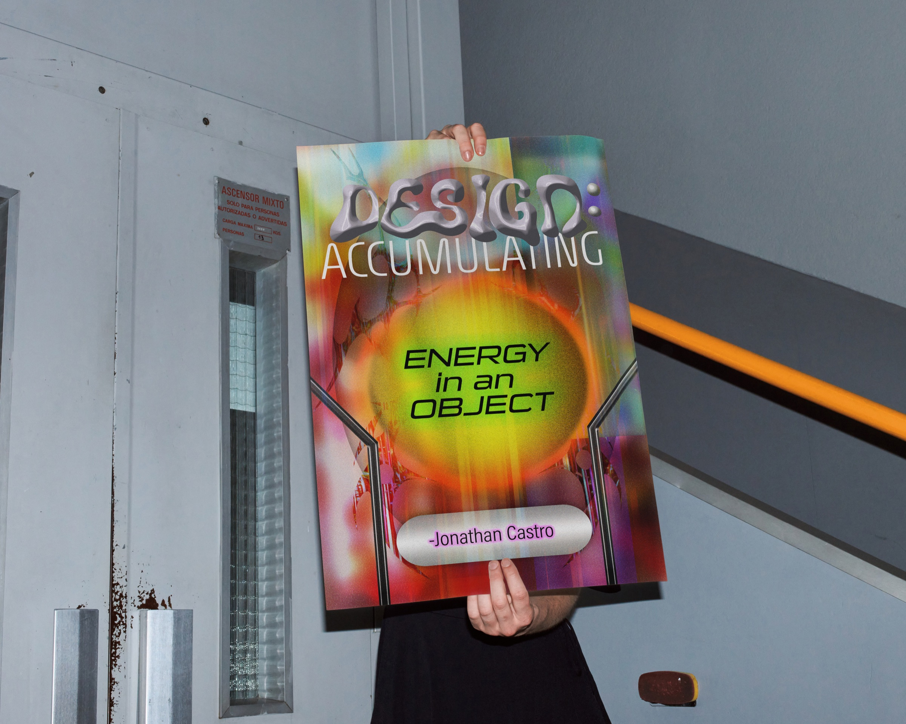
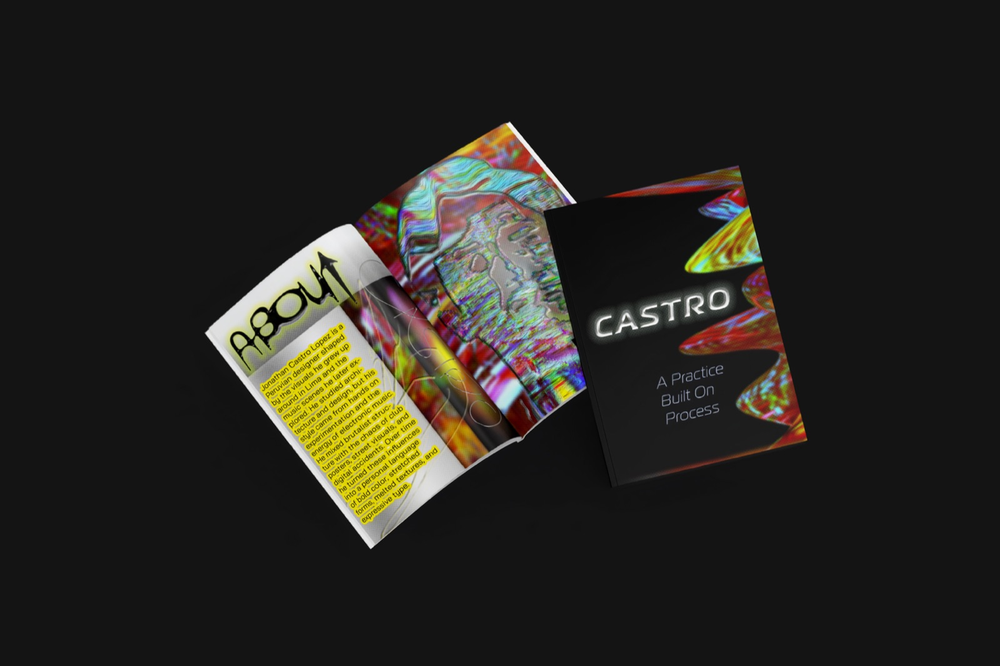
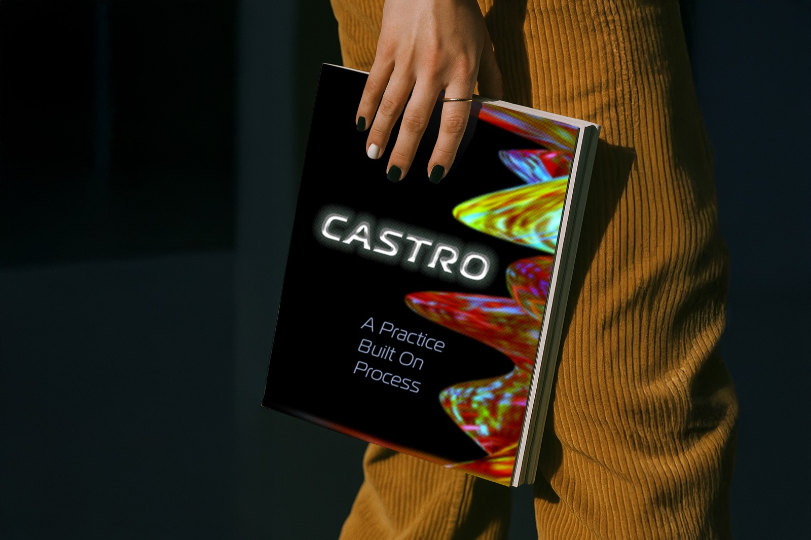

Case study · Editorial · 2025
Designer Tribute Zine + Poster
This zine was created for a project researching a contemporary artist and designing a publication inspired by their style.
01 — Research
I chose Jonathan Castro because I was drawn to his vibrant colors, chaotic compositions, and the way he draws inspiration from his Latin culture—something I deeply connect with as well.


02 — Sketches
03 — Concept development


05 — Mockups

